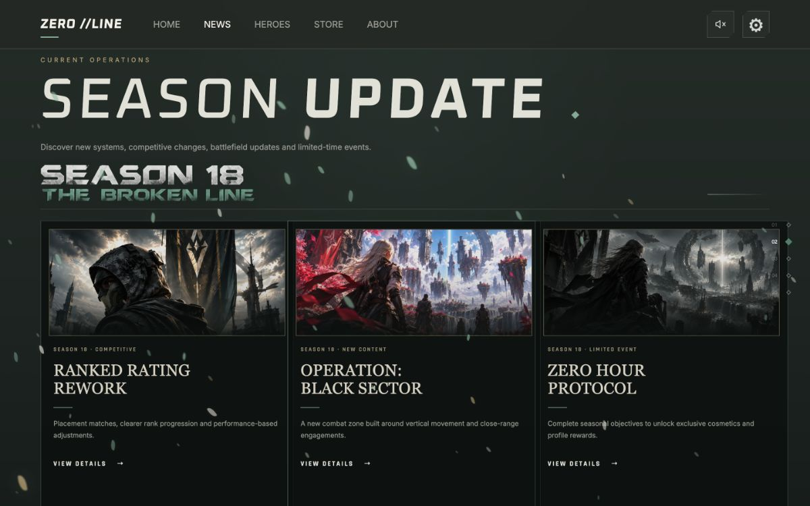
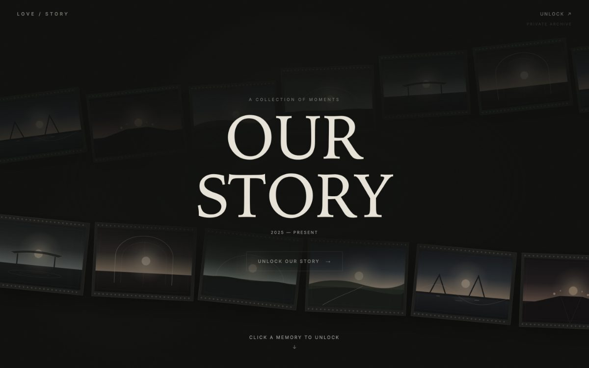
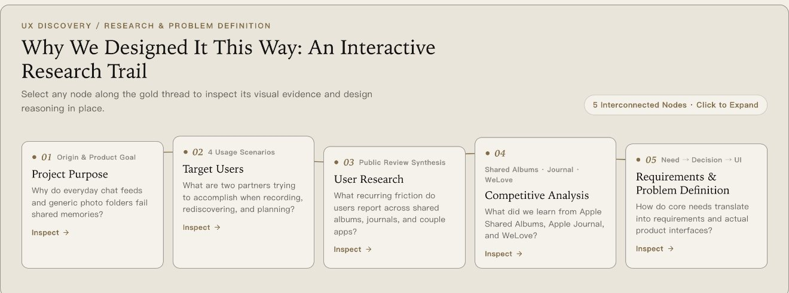
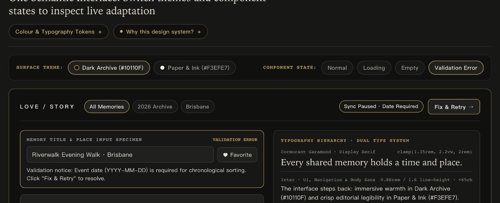
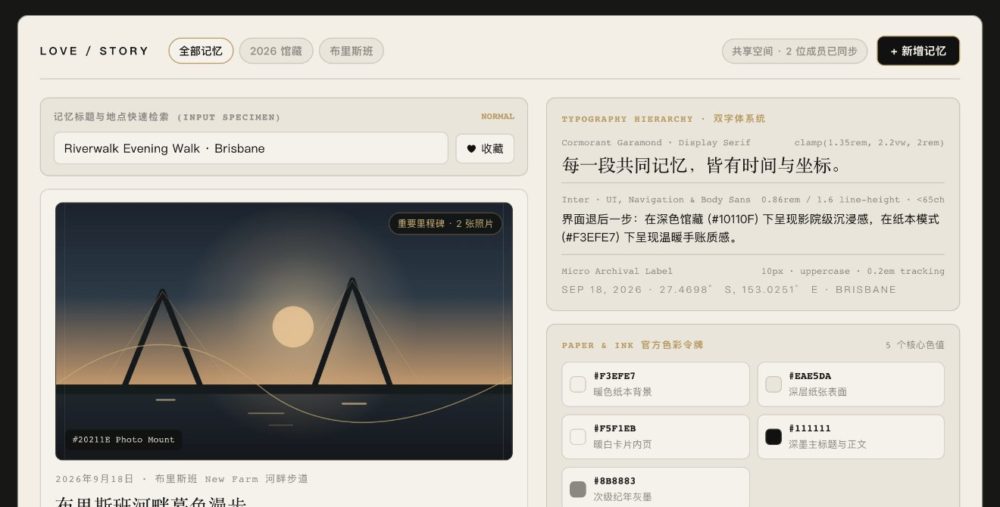

PORTFOLIO · 2026
SELECTED WORKS IN UI/UX, INFORMATION ARCHITECTURE & INTERACTION DESIGN
SELECTED DESIGN ARCHIVE · 2026 EDITION
JIANSHUO
LIU
刘建硕 · 精选设计作品集
UI/UX & Interaction Designer · UI/UX 与交互设计师
专注于从用户研究与问题定义、复杂空间信息架构到双境视觉设计系统与真实前端交互落地的完整设计闭环。本册精选两项代表作：高张力战术概念官网 ZERO//LINE 与全栈双人数字记忆档案馆 LoveStory。
02 · SELECTED PROJECTS
精选项目总览与差异化设计重心
TWO CONTRASTING PRODUCT DOMAINS · 双维设计能力印证
02 / 10
CURATED DUAL-WORK ARCHITECTURE · 精选双项目矩阵
两项风格迥异但能力互补的核心作品：品牌视觉张力 vs. 深度产品架构
通过两类截然不同的数字产品形态，分别检验高表现力概念官网的视觉与动效叙事，以及长周期双人工具的 UX 研究、复杂信息架构与设计系统落地。
PROJECT 01 · GAME CONCEPT WEBSITE & BRAND UI
访问线上概念站 ↗
ZERO // LINE
战术竞技射击游戏概念官网——聚焦强烈世界观视觉识别、角色主导的非对称首屏构图、四帧匹配剪辑拔刀转场与五模块沉浸式前端交互。
 实机概念官网 · HOME 首屏 (1440×900)
实机概念官网 · HOME 首屏 (1440×900)
设计重心
品牌视觉张力与转场动效
核心信息架构
HOME / NEWS / HEROES / STORE / ABOUT
项目边界声明
Web 概念官网 (非 FPS 客户端)
PROJECT 02 · INTERACTIVE MEMORY ARCHIVE & DESIGN SYSTEM
访问线上全栈产品 ↗
LoveStory · 我们的故事
专为两个人构建的数字记忆档案馆——涵盖公开评论挖掘与一手自用研究、时间×地理双向空间检索、二级隐私门禁与 Dark Archive / Paper & Ink 双境设计系统。
 实机生产环境 · Our Space 空间中枢 (1440×900)
实机生产环境 · Our Space 空间中枢 (1440×900)
设计重心
UX 研究推演、复杂 IA 与双境系统
核心交互突破
画廊 · 时间轴×地球仪 · 角色权限
工程落地深度
React + FastAPI + SQLite 全栈上线
为什么同时展示这两个项目？
ZERO//LINE 证明高冲击力品牌视觉、角色构图与转场动效能力；LoveStory 证明严谨的 UX 研究证据链、跨模块状态同步与语义化设计系统能力。
03 · ZERO//LINE — VISUAL DESIGN
视觉识别系统 · 角色主导构图 · 战术色彩语言
BRAND IDENTITY & ART DIRECTION · 战术世界观视觉建构
突破同质化赛博霓虹：以低饱和鼠尾草绿与五人小队构图建立首屏统治力
摒弃射击品类常见的刺眼荧光色，采用深炭灰 (`#0D100E`) + 鼠尾草战术绿 (`#6E8F7A`) 与斜切裂痕陈列字标，让角色剪影与核心入口成为唯一视觉焦点。
实机网页截图 · ZERO//LINE 首屏视觉 (HOME · 1440×900)
01 · CHARACTER-LED COMPOSITION (角色主导非对称构图)
右侧五人战术小队形成前中后三层景深，人物视线与枪口轴线引导访客视线汇聚至左侧 BREAK // THE LINE 主标题与高对比象牙白主按钮 START GAME ↗。
02 · TYPOGRAPHY & HUD GRID (战术字体与 HUD 秩序)
定制金属质感斜切双斜杠 // 强化“破阵防线”记忆点；顶部五模块导航与右侧 01–05 菱形刻度尺保持极简克制，避免传统游戏官网的冗余弹窗干扰。

02 · NEWS 赛季情报矩阵 (SEASON 18 UPDATE)
03 · COLOUR LANGUAGE (官方五色战术令牌系统)
#0D100E
战场暗炭底
#1A221E
战术面板灰
#6E8F7A
鼠尾草主色
#C84B31
绯红刀光强调
#ECEFE9
冷骨白字标
04 · ZERO//LINE — INTERACTION DESIGN
四帧匹配剪辑拔刀转场 · 角色技能检视 · 商业化商店交互
前端概念官网交互实装 · 尊重 prefers-reduced-motion 无障碍规范
04 / 10
CINEMATIC TRANSITION & MODULE INTERACTION · 叙事型交互设计
将世界观融入交互动作：2.2 秒四帧拔刀破屏转场与五模块闭环浏览
拒绝生硬的页面跳转——访客点击进入项目时，先锋角色 NOVA 通过四帧连续动作完成拔刀斩击，刀光轨迹将画面一分为二并自然过渡至首屏。
INTERACTION 01 · FOUR-FRAME MATCH-CUT SLASH ENTRANCE (四帧匹配剪辑拔刀斩击转场 · 总时长 2200ms · 支持 ESC 随时跳过)
共享骨盆与战靴锚点对齐 · 消除多帧切换跳动

FRAME 01 · 0–350ms
READY · 持刀蓄势
垂直立刀守势，锁定视觉重心锚点。

FRAME 02 · 350–850ms
DRAW · 拔刀出鞘
刀锋沿右上方斜线提拉，蓄积动态张力。

FRAME 03 · 850–1350ms
WIND-UP · 旋身聚力
双手高举过顶蓄力，背景红枫粒子加速。

FRAME 04 · 1350–2200ms
STRIKE · 破阵斩击
绯红刀弧横向破屏，无缝揭幕案例主舞台。
 INTERACTION 02 · HEROES 英雄档案与 Q/E/R 技能检视 (1440×900)
INTERACTION 02 · HEROES 英雄档案与 Q/E/R 技能检视 (1440×900)
非对称多边形立绘裁切 + 技能拆解：左侧六边形斜切视窗展示 NOVA 全身动势，右侧以等宽键位图标（Q · CRIMSON SEVER / E · MAPLE GUARD / R · OATHFALL）结合底部角色切换器（01 NOVA / 02 VESPER / 03 RONIN）实现零跳转对比。
 INTERACTION 03 · STORE 三栏商业化入口矩阵 (1440×900)
INTERACTION 03 · STORE 三栏商业化入口矩阵 (1440×900)
清晰的分流卡片层级与诚实边界：将商业化路径归纳为 01 BUY GAME、02 GAME CREDITS、03 ITEM STORE 三张等高纵向视觉卡；案例中同时通过 5 模块交互式 Tab 展柜支持键盘方向键（← / →）与灯箱放大检视。
05 · LOVESTORY — PRODUCT OVERVIEW
双人私密数字记忆档案馆 · 核心定位与空间化信息架构
PRODUCT VISION & SPATIAL HUB ARCHITECTURE · 产品定位与核心价值
让共同记忆不再淹没于日常聊天流：围绕 Our Space 构建的双人数字记忆馆
已上线全栈 Web 产品（React + FastAPI + SQLite）——将零散照片、时间节点、城市坐标、未来心愿与私密信件编织为有机相连的双人数字空间。
实机生产界面 · Our Space 空间化记忆中枢 (1440×900 · Dark Archive #10110F)
01 · 核心痛点与定位
聊天记录按消息流刷走，通用云盘按文件名堆叠；伴侣需要按“一次共同经历”封存图文故事。
02 · 星群式信息架构 (IA)
以 Our World 为中心，一屏贯通画廊、编年时间轴、正射地球仪、纪念日倒数与未来计划。
03 · 退后一步的画框哲学
采用 #10110F 馆藏黑与 #20211E 原色相纸框，绝不对照片施加偏色滤镜，让记忆本身发光。

实机界面 · 公开双胶片流门廊与解锁入口 (Entrance)
CROSS-DEVICE ADAPTATION · 双端原生体验
390×844 竖屏原生重构，而非桌面端简单缩放
左图（移动端主页）：以一条贯穿纵向屏幕的金色曲线串联记忆卡片与底部五栏导航。
右图（六步全屏编辑器）：针对手指触控将桌面长抽屉重构为 Photos / Story / Details / Note / Timeline / Privacy 六步折叠表单与底部固定保存栏。
06 · LOVESTORY — UX RESEARCH & PROBLEM DEFINITION
UX 研究推演链条：目标用户情境 → 公开用户反馈 → 核心洞察 → 设计需求
严格区分公开二级研究与一手双人自用观察 · 零虚构样本指标
06 / 10
EVIDENCE-BASED UX REASONING CHAIN · 可追溯的研究与问题定义
从真实痛点到界面决策：结合公开社区评论挖掘与开发期双人实测日志
拒绝空洞的伪造问卷——通过横向剖析三类代表性产品公开评论，并结合真实双人自用日志，建立清晰的四步决策链。
STEP 01 · TARGET USERS (目标用户情境)
四类双人核心任务 (JTBD)
围绕“共同记录当晚散步/旅行、跨时空重温、保护高敏信件、筹备未来同行”四类真实情境建模。
STEP 02 · PUBLIC FEEDBACK (公开反馈挖掘)
三类现有工具的结构性断层
Apple 共享相簿补录旧照易按添加时间乱序（#255929749）；Apple 手记仅限单人账号（#255384972）；微爱叠加补签卡与广告噪音。
STEP 03 · UX INSIGHT (核心 UX 洞察)
基本单位是“经历”而非“文件”
伴侣按“那年秋天的京都/河岸”记忆往事；且在双人空间中，明确的“当前空间可见性确认”是信任基础。
STEP 04 · DESIGN REQUIREMENTS (设计需求)
四大核心产品设计要求
① 显式共享空间状态抽屉；② 严格按发生日期 YYYY-MM-DD 排序并与地球仪联动；③ 零元数据外泄二级锁；④ 移动端六步全屏表单。
 公开二级研究对照 · Apple 共享相簿文件流 vs. LoveStory 故事单元
公开二级研究对照 · Apple 共享相簿文件流 vs. LoveStory 故事单元
方法论诚实性声明（Credibility & Provenance）：本案未虚构用户访谈人数或百分比问卷；外部洞察均标注公开社区与官方支持文档出处（已核对至 2026 年 10 月 iOS 27 与微爱 v6.5.9），并与开发期真实双人自用日志严格区分。
 一手自用痛点修复 · Our Story 共享空间状态抽屉 (2 MEMBERS · CURRENT)
一手自用痛点修复 · Our Story 共享空间状态抽屉 (2 MEMBERS · CURRENT)

作品集交互创新 · 五节点有机金线 UX 研究画布 (点击节点原位展开)
07 · LOVESTORY — INTERACTIVE MEMORY GALLERY
沉浸式记忆画廊 (Moments) · 从总览筛选到 #20211E 原色详情画框的连续体验
BEFORE / AFTER INTERACTION STATES · 画廊总览 ↔ 详情展开
07 / 10
PHOTO-TRUE EXHIBITION GALLERY · 记忆画廊与原色相纸画框交互
一则记忆一张封面：在整洁的网格总览与沉浸式多图故事画框之间自然切换
解决传统相册“同一天连拍数十张照片撑爆网格”的视觉噪音——外部网格仅展示精选封面，点击后在 #20211E 暗房画框内完整展卷。
 STATE A · 记忆画廊总览：按年份/城市筛选 + 01 主推里程碑与等高网格
STATE A · 记忆画廊总览：按年份/城市筛选 + 01 主推里程碑与等高网格
① 视觉主次层级 (Visual Hierarchy)
首条重要里程碑（Riverwalk Evening Walk）采用大画幅呈现，其余日常与旅行记忆以等高卡片规整排列。
② 悬停微交互反馈 (Hover Feedback)
悬停或键盘聚焦任一卡片时，底部浮现天气、温度与心情标签（如 Cloudy · 18°C · Grateful）。
 STATE B · 选中记忆展开：#20211E 原色相纸画框 + Print 01/02 切换 + 地图深链
STATE B · 选中记忆展开：#20211E 原色相纸画框 + Print 01/02 切换 + 地图深链
③ 组图不刷屏 (Multi-Print Switcher)
画框内提供 Print 01 / 02 胶片切换与底部胶片轨道，既保留多图细节又维护外部画廊秩序。
④ 一键跨模块空间定位 (Map Deep-Link)
点击右上角 Locate on Memory Map ↗ 立即跳转至记忆地图并高亮布里斯班坐标。
08 · LOVESTORY — TIMELINE × MEMORY MAP
编年时间轴 × 正射投影地球仪 · 时间与空间双向同步交互
SINGLE SHARED STATE (`selectedMemoryId`) · 双向实时联动
08 / 10
BIDIRECTIONAL TIME × PLACE SYNCHRONISATION · 时空双维重温机制
“那是哪一年？”与“我们在哪座城市？”——单一共享状态驱动的时空双向联动
基于 Natural Earth 110m 真实海岸线正射投影与严格事件日期（YYYY-MM-DD）时间轴，无论从时间节点还是地球仪坐标触发，三处视图瞬时同步。
 PATHWAY 01 · 正向联动 (Timeline → Map)：选中时间轴“2026 MAY 12 京都” → 地球仪高亮 34.9977° N, 135.7812° E
PATHWAY 01 · 正向联动 (Timeline → Map)：选中时间轴“2026 MAY 12 京都” → 地球仪高亮 34.9977° N, 135.7812° E
按真实发生日期归位（Event-Date Chronology）：即便在返程数日后补传照片，时间轴依然严格按事件真实日期（2026-05-12）排序，选中后地球仪同步亮起京都脉冲光环。
 PATHWAY 02 · 反向联动 (Map → Timeline)：点击地球仪“成都 Chengdu”图钉 → 时间轴自动定位 2025 NOV 03 节点
PATHWAY 02 · 反向联动 (Map → Timeline)：点击地球仪“成都 Chengdu”图钉 → 时间轴自动定位 2025 NOV 03 节点
三方视图零延迟同步（Timeline ↔ Globe ↔ Preview）：点击地球仪上的成都锚点或底部城市索引胶囊，顶部时间轴立即高亮 2025 NOV 03，右侧预览卡同步切换为《Bamboo Courtyard Tea House》。
09 · LOVESTORY — PRIVACY & DESIGN SYSTEM
二级隐私门禁与四级角色权限 · Dark Archive vs. Paper & Ink 双境设计系统
ACCESS BOUNDARIES & SEMANTIC TOKENS · 隐私边界与语义化系统
09 / 10
TRUST BOUNDARIES & DUAL-SURFACE SYSTEM · 情感安全感与视觉秩序
显式定义权限边界与组件四态：二级密码门禁 + 双境主题语义化适配
左栏展示如何通过二级锁与角色权限防止私密信件误触曝光；右栏展示同一套组件如何在深色馆藏与浅色纸本双境及四态反馈中协同。
PILLAR A · PRIVATE ARCHIVE & ROLE PERMISSIONS (二级隐私锁与角色权限)
10分钟超时自动重锁
 STATE 01 · 初始锁定态：未解锁前隐藏一切私密记录数量、封面与标题
STATE 01 · 初始锁定态：未解锁前隐藏一切私密记录数量、封面与标题
 STATE 02 · 角色解锁态：按 Viewer (只读) / Editor / Creator 动态开放权限
STATE 02 · 角色解锁态：按 Viewer (只读) / Editor / Creator 动态开放权限
四级角色权限边界（No Access / Viewer / Editor / Creator）：未解锁前零计数外泄；Viewer 仅可只读浏览；Editor 可修改批注；仅 Creator 可管理访问名单或将私密记忆转为公开（需二次确认防误触）。
PILLAR B · DUAL-SURFACE DESIGN SYSTEM (双境主题与校验错误就地恢复)
Dark #10110F ↔ Paper #F3EFE7

SPECIMEN 01 · Dark Archive (#10110F) · Validation Error 校验错误态 (缺失 YYYY-MM-DD 就地恢复)

SPECIMEN 02 · Paper & Ink (#F3EFE7) · 浅色纸本正常态 (#20211E 画框保持原色不偏色)
语义化令牌重映射与四态规范（Normal / Loading / Empty / Validation Error）：切换主题仅重映射背景与墨色变量，照片画框（#20211E）始终中性不偏色；缺失发生日期（YYYY-MM-DD）时触发校验错误（Validation Error）并提供一键就地恢复。
10 · SUMMARY & LIVE INTERACTIVE LINKS
核心设计能力总结与在线交互体验入口
DESIGN CAPABILITIES & VERIFIED DESTINATIONS · 总结与在线体验
在浏览器中体验完整交互：所有研究节点、地图联动与设计系统均可在线操作
静态 PDF 仅展示关键视觉切片——点击下方任意已验证链接或扫描右侧二维码，即可直接进入在线交互作品集。
01 · UX RESEARCH & IA
以真实证据驱动信息架构
不依赖套路化模板，从公开用户评论痛点与真实双人使用日志出发，构建清晰可追溯的 Need → Decision → UI 决策链与空间化星群架构。
印证章节：LoveStory UX Discovery & Archive 02
02 · VISUAL CRAFT & MOTION
驾驭差异化视觉与叙事动效
既能塑造 ZERO//LINE 冷峻高张力的角色构图与四帧拔刀转场，也能打磨 LoveStory 温润克制的暗房画框与手写金线转场。
印证章节：ZERO//LINE P.03–04 & LoveStory P.05
03 · DESIGN SYSTEMS & STATES
组件级状态反馈与双境令牌
完整定义 Dark Archive 与 Paper & Ink 语义化色彩令牌，显式覆盖 Normal / Loading / Empty / Validation Error 四态与四级权限边界。
印证章节：LoveStory Archive 03 & Archive 04
04 · PRODUCTION IMPLEMENTATION
设计稿即真实可运行产品
熟练运用 React 19、TypeScript、Motion 与 CSS 变量独立完成前端交互及全栈产品落地，确保动效帧率、响应式布局与无障碍焦点体验高度还原。
印证章节：全站支持键盘导航与减弱动态偏好
DESIGNER CONTACT · 联系方式
刘建硕 · Jianshuo Liu
UI/UX & Interaction Designer
 扫码访问在线作品集
扫码访问在线作品集
02 · ZERO//LINE INTERACTIVE EXPERIENCE (战术概念官网与案例剖析)
React + TypeScript + Motion
ZERO // LINE — 概念官网与四帧拔刀转场体验
可在线体验完整拔刀破屏转场、五模块截图展柜与 11 章完整设计文档：
03 · LOVESTORY INTERACTIVE CASE STUDY & LIVE ARCHIVE (交互式设计档案馆)
React + FastAPI + SQLite
LoveStory — 手写金线拉幕、五节点 UX 研究画布与四大交互原型
可在线交互操作记忆画廊、时间轴×地球仪联动、二级隐私角色切换与双境设计系统样本：